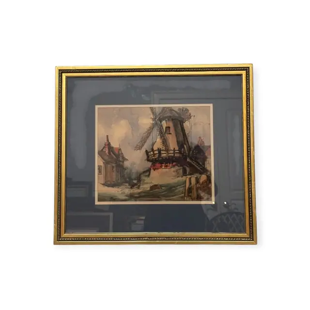
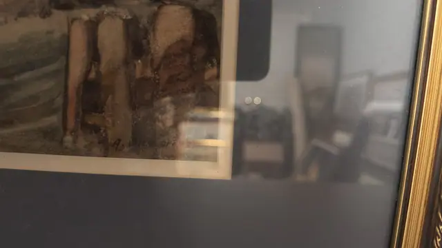
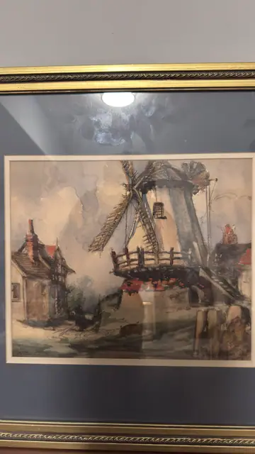

Paintings & Prints
Windmill and Cottages, Signed Watercolour, Signed, Framed
· late 19th to early 20th century
Price Upon Request



About the Item
A watercolour of a working windmill seen from below: the white-washed tower and its lattice sails fill the upper right, wrapped by a red-brown timber gallery, while a half-timbered cottage with a red roof stands at the left. The sky is worked in broad grey-buff washes that suggest driving cloud, and the foreground is scratched and stippled with dry-brush strokes for grass, figures and hens. The palette is muted - ochre, brick red, olive and slate grey - and the sheet is float-mounted on a deep navy mat inside an ornate gilt frame. Medium: watercolour with bodycolour on paper. Signed lower right of the sheet, in dark ink or watercolour, reading "A. W…son (only the initial and the final letters are legible)". Condition: Sheet lightly toned; strong reflections on the glass in the detail shots make the surface hard to assess; no obvious tears or losses visible.
Details
- Creation Year:
- late 19th to early 20th century
- Dimensions:
- Height: 18.75 in (47.62 cm)
Width: 20.75 in (52.7 cm)
outside of frame - Medium:
- watercolour with bodycolour on paper
- Period:
- 20Th
- Condition:
- Offered in the condition shown in the photographs.
- Reference Number:
- VO-130
- Documentation:
- no certificate photographed